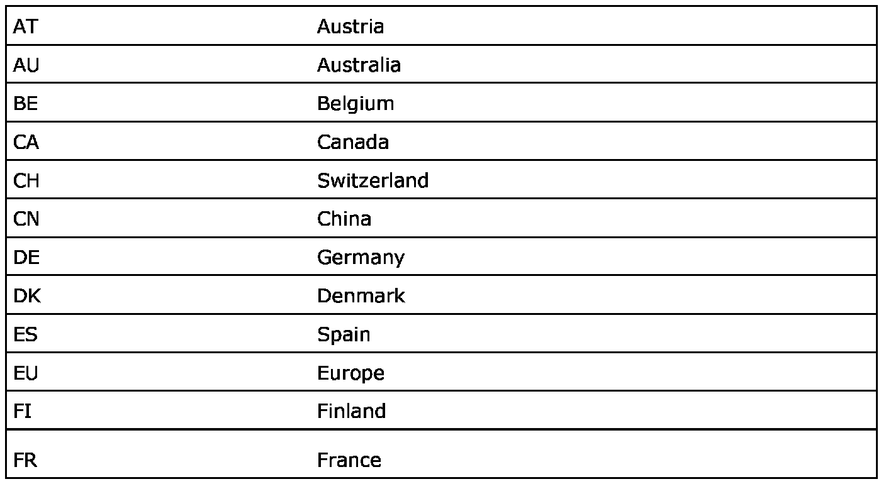

Warning Messages
Warning Messages
Warning, Important and Note
The headings "Warning", "Important" and "Note" occur from time to time in the Service Manual. They are used to draw the attention of the reader to information of special interest and seriousness. The importance of the information is indicated by the three different headings and the difference between them is explained below.
WARNING: Warns of the risk of material damage and grave injury to mechanics and the driver, as well as serious damage to the car.
IMPORTANT: Points out the risk of minor damage to the car and also warns the mechanic of difficulties and time-wasting mistakes.
NOTE:
- Hints and tips on how the work can be carried out in a way that saves both time and effort.
- This information is provided as means of improving efficiency, not for reasons of safety.
Market codes
The codes refer to market specifications.
